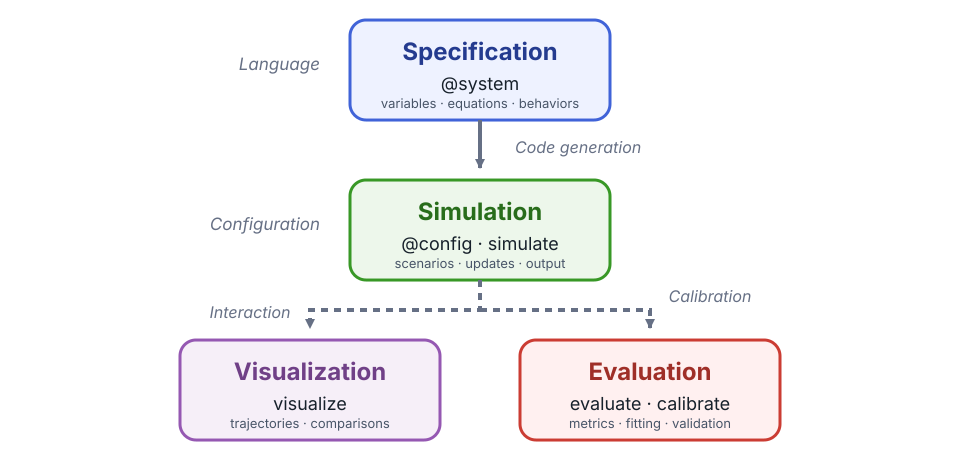

How Cropbox Works
Cropbox is a modeling framework rather than one particular crop model. It is best understood as a small vocabulary for declaring a model graph. The graph describes what each variable means and what it depends on; the framework turns that graph into an ordered update routine.
Core building blocks
A Cropbox model is built from five closely related elements: systems, variables, dependencies, behaviors, and a shared context.
System
A System is a reusable model component containing variables. A system can represent a process such as phenology, an environment such as weather, or an entire model. Systems are composed through mixins and through variables that hold other systems.
Variable
A variable has a short programmatic name, an optional alias, dependencies, a formula or initial value, and an update behavior.
response(temperature, base): effective_temperature =>
temperature - base ~ track(min = 0, u"K")Here response depends on temperature and base; effective_temperature is an alias; the expression is recalculated by track; min = 0 applies a lower bound to the stored value; and the result has units of kelvin.
Dependency
Dependencies are listed in parentheses after the variable name. Cropbox orders variables so a dependency is current before its consumer is evaluated. Ordinary cycles are rejected; state that changes over time is expressed through a behavior such as accumulate.
Behavior
The word after ~ describes how a value changes:
| Behavior | Meaning | Typical use |
|---|---|---|
preserve | Initialize once | parameter or constant |
track | Recalculate on update | algebraic equation |
accumulate | Integrate a rate over time | biomass or thermal time |
flag | Track a Boolean condition | emergence, maturity, stop |
Tags refine a behavior. For example, parameter, init, when, min, and max change configuration, initialization, conditional updates, and bounds. Data input, interpolation, numerical solvers, and dynamic child systems use additional behaviors documented in Behaviors and Tags.
Context
Systems share a Context containing configuration and a Clock. A top-level Controller creates that context. Child systems receive it from their parent, which keeps time and configuration consistent across the model.
Modeling workflow
Cropbox separates model development into three recurring phases. A specification describes the model independently of a particular run, simulation applies scenarios and advances model state, and the resulting data support two complementary activities: visualization and evaluation.

1. Specification
Use @system to declare variables, dependencies, equations, and behaviors. Cropbox parses this specification, analyzes its dependency graph, and generates the Julia types and update routines used during simulation. Mixins compose reusable systems, while parameter tags define the inputs that configuration may supply. Unit tags make compatible conversion and dimensional checking part of the specification.
using Cropbox
@system TemperatureResponse begin
T: temperature => 20 ~ preserve(parameter, u"°C")
Tb: base_temperature => 5 ~ preserve(parameter, u"°C")
Δt(context.clock.step): timestep ~ preserve(u"hr")
r(T, Tb, Δt): response => (T - Tb) / Δt ~ track(min = 0, u"K/hr")
end
@system Development(TemperatureResponse, Controller) begin
progress(r) ~ accumulate(u"K")
end
config = @config TemperatureResponse => (
T = 18,
Tb = 4,
)Config for 1 system:
| TemperatureResponse | ||
| T | = | 18 °C |
| Tb | = | 4 °C |
Short names keep dependencies and equations compact. Descriptive aliases such as temperature, base_temperature, timestep, and response remain available when reading an instance or selecting output. Δt reads the configured Clock.step, so the response equation does not bake in a fixed update interval. The configuration supplies plain numbers for T and Tb; Cropbox applies their declared unit and displays them as 18 °C and 4 °C.
Continue with DSL Syntax, System, and Configure Models and Scenarios. The Quick Start develops a complete small specification.
2. Simulation
@config supplies parameter values and infrastructure settings without changing the specification. instance constructs a model for interactive inspection. simulate constructs and advances a fresh instance, applies stopping and snapshot rules, and returns selected variables as a DataFrame. The same specification can therefore be run with many scenarios and output selections.
s = instance(Development; config)
current_response = s.response'
result = simulate(Development;
config,
stop = 3u"hr",
target = [:response, :progress],
)
first(result, 3)| Row | time | response | progress |
|---|---|---|---|
| Quantity… | Quantity… | Quantity… | |
| 1 | 0.0 hr | 14.0 K hr^-1 | 0.0 K |
| 2 | 1.0 hr | 14.0 K hr^-1 | 14.0 K |
| 3 | 2.0 hr | 14.0 K hr^-1 | 28.0 K |
A system field is a Cropbox state object rather than a bare number; postfix ' or value retrieves its current value outside a declaration. See Model Execution and Run Simulations and Shape Output for construction, updates, stopping, snapshots, and output selectors.
3. Visualization and evaluation
visualize explores trajectories, scenarios, and observations. evaluate compares model estimates with observed data using a selected metric, and calibrate searches parameter ranges against that objective. Keep calibration and independent validation separate.
visualize(result, :time, :progress; kind = :line)Continue with Inspect and Visualize Models and the Evaluate and Calibrate Models workflow.
Where to go next
Follow the Quick Start to apply all three stages to a small model, then choose a domain tutorial from the navigation. Use the workflow and reference pages when you need more control over an individual stage.